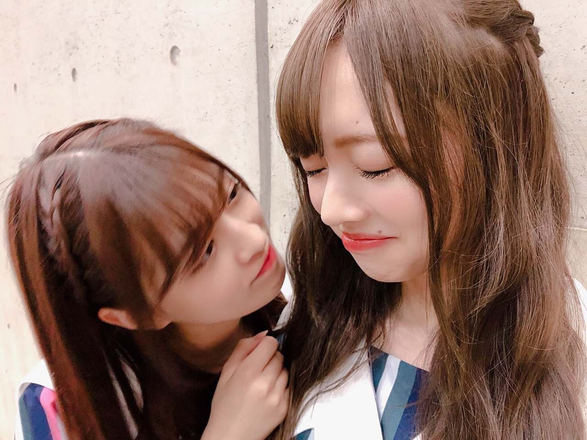
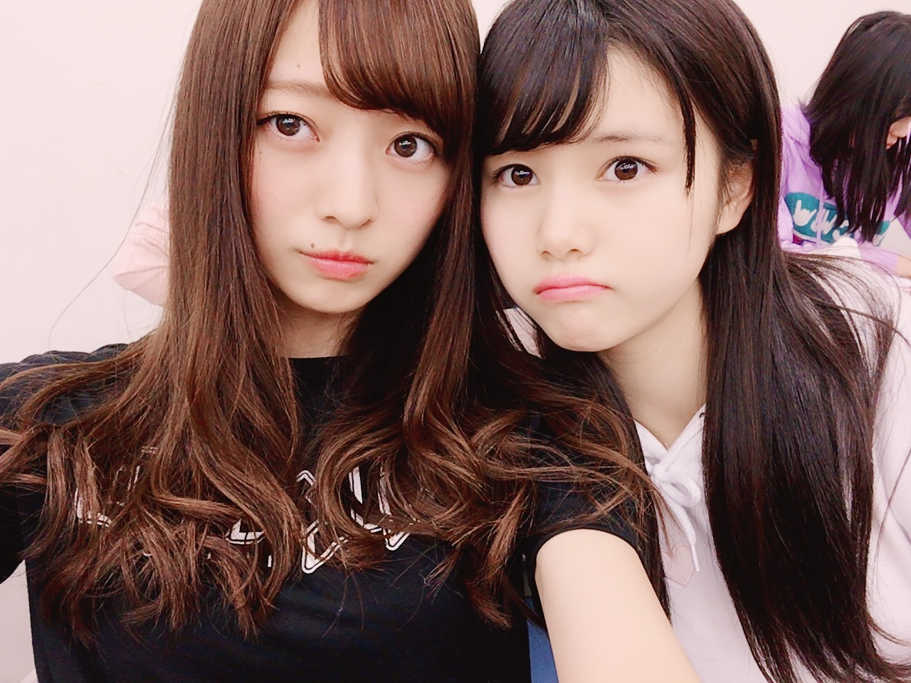
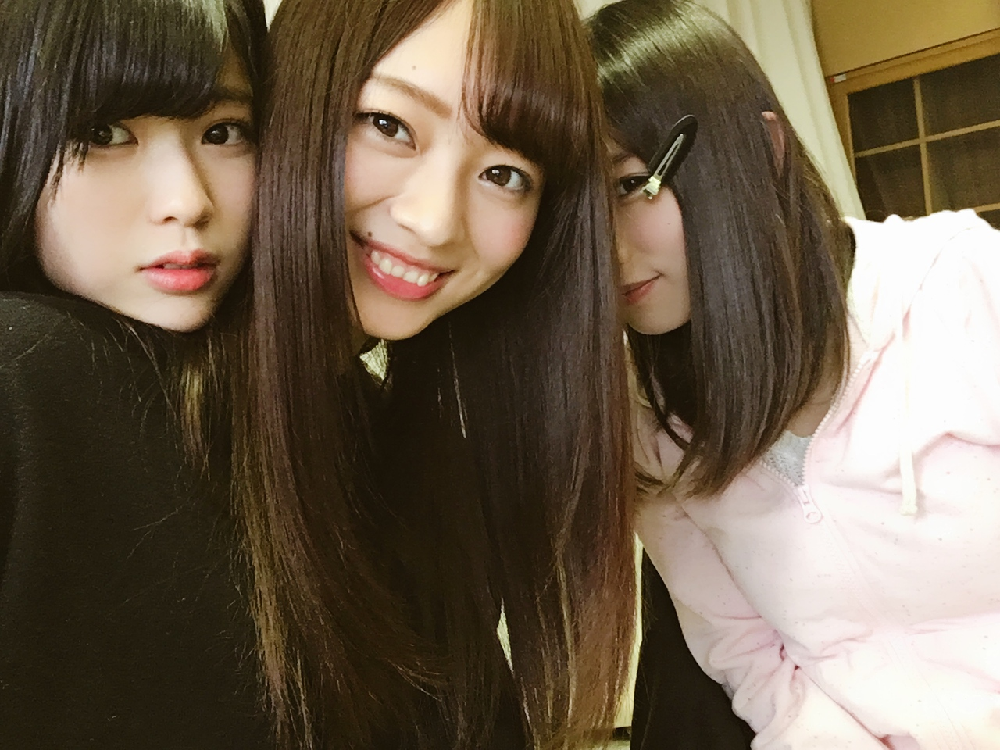
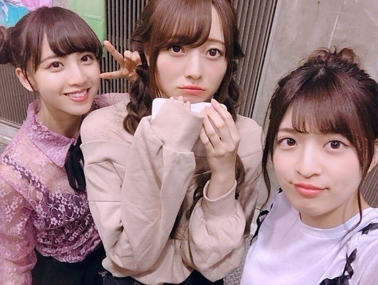
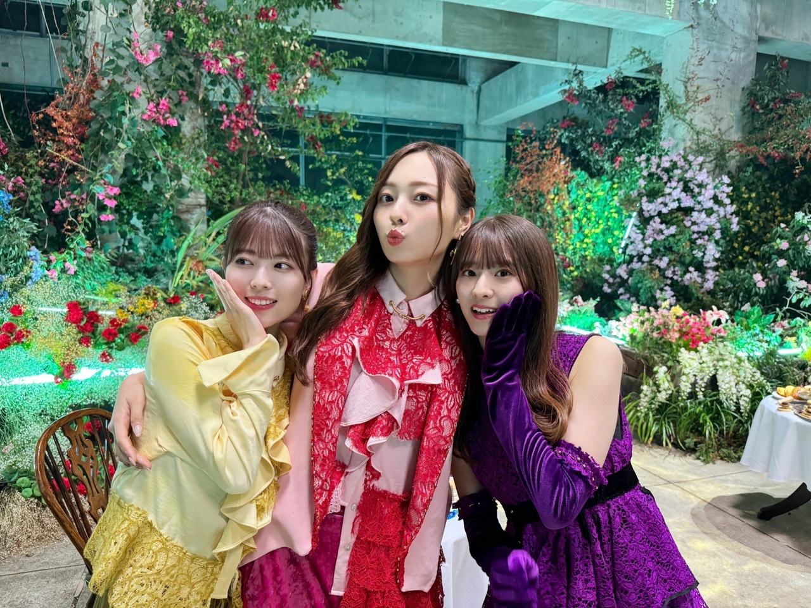

追 憶
６期生オーディションの開催が
決定いたしました！
https://nogizaka46audition.com/
何者でなくても、
なにも持っていなくても
当たり前に大丈夫で、そのままでよくて
ここはなにかを持たせてくれたり
気づかせてくれたり
何者かを教えてもらえたり
知ることができたり
違う自分をスタートさせてくれる場所なので、
もしも迷っているのなら
少しでも気持ちが傾いているのなら
挑戦してみてもいいんじゃないかな〜って、
思います。
と言っても、人生は大きく変わっていくし
学校や友達、家族はもちろん
色んなこととの関わり方も変わり
今あるものとの距離が
少し広がるかもしれません。
覚悟とか、不安とか、
抱えきれないほど考えたり
自信のなさに震えたり
自分も経験したからこそ
すごく、
痛いほど気持ちが分かるけど
進む過程で 固まっていくし
定まっていくものだったりも、します！
今、乃木坂46にいてくれているみんなは
それを乗り越えて
色んなことを変えて、変わらせて
その中で変わらないものを守りながら
自分の可能性とか 新しい夢とか
探して、みんなで頑張っています(^^)
たくさん考えてくれて
悩んでくれている方がいるのなら、
その気持ちだけでも、真剣に考えてくれて
本当にありがとうございます。
とっても嬉しいです(^^)
わたしは乃木坂４６が大好きで
オーディションを受けた時は
その気持ちだけ、持っていました。
特技も、出来ることも、
なーんにもなくて
それしかなくて
あまりにも手ぶらだったわたしだけど
乃木坂への気持ちってすごく大切で、
自分の気持ちが折れそうになった時に
それが一番、ストッパーになったし
起き上がらせてくれる材料になりました。
だから、乃木坂のこと
すごく好きでいてくれる子が
来てくれたら、嬉しいです(^^)
その気持ちは、内面からすごく
感じられるものだから
そんな子がいてくれたら、幸せ！
あとは、本当に素敵な仲間たちに出会えます！
学校が変わったりとか
職場が変わったりとか
今ある環境は少し、遠ざかるかもしれないけど
ここには、本当に素敵な子達がたくさんいるから
どうかそれも楽しみに
わくわくしてもらえたら(^^)




懐かしい写真たちでも
のせておきます
私たちが導いてあげられることも
教えてあげられることも
寄り添えることも、きっとできるはず。
楽しみに、待っています(^^)

私たちも、どきどきだよ〜。
Original：https://www.nogizaka46.com/s/n46/diary/detail/102264?ima=4932&cd=MEMBER